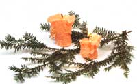

Place your candles on a few evergreen branches for an elegant table arrangement.->>
This month is our big gardening issue, in which we ask you to plan and dream about springtime's arrival. But let's face it, no matter how hard you try, you're not going to dream away the piles of snow blockading your car in the driveway. You can draw your shades, post pictures of robins, and refuse to exit your house, but that snow isn't go ing anywhere. That's why we at MOTHER offer you this project-not to occupy your time indoors, but to rejuvenate your appreciation for what's outside. -The Editors
snow
paraffin or beeswax
a tin can
a pan
old crayons or old colored candles
candle wicking (sold in craft stores)
waxed paper
a stick
an oven mitt
1. Place the paraffin or beeswax in the tin can. Pour two inches of water into the pan and then place the can of paraffin into the pan. Heat on the stove until the water boils, then turn the burner down so that the water simmers but doesn't boil. Watch the paraffin carefully as it melts. Stir in old crayons or old pieces of candles for color. Caution: Never put paraffin directly in a pan over the burner, because it may get too hot and explode.
2. As soon as the wax melts, turn off the stove. Dip the candle wicking in the melted wax so that it is fairly stiff, and lay it out straight on a piece of waxed paper to dry thorougly.
3. Go outside to prepare the snow mold. Find a spot where the snow is at least one foot deep and solid enough to hold its shape when you poke a hole in it.
4. Use a stick to poke a hole a few inches deep in the snow. This will be your candle mold, so try experimenting with different shapes and sizes. When you are satisfied with the shape of your hole, go back inside and turn the stove on again. It won't take long for the water to heat up again and for the wax to melt if it has hardened a bit.
5. Using an oven mitt or hot pad, carry the can of melted wax and the piece of candle wicking outside to the snow mold. Dangle the wick down the center of the mold and carefully pour the melted wax around the wick into the hole. Hold onto the wick for a few minutes until you're sure the wax has cooled and hardened enough to hold the wick straight. 6. Let the candle cool for about an hour.
7. Carefully dig the candle out of the hole by digging around it with your hands. Bring the candle inside and rinse it off under cool water.
8. Trim the wick to about one inch. Carefully trim or scrape off any bumps on the bottom of the candle so it will stand up.
9. Make an arrangement for a table or mantle by cutting a few evergreen branches and using them to surround the base of the candle. Try nestling several candles in some evergreen branches.
FACTS
There are about one million ice crystals in a patch of snow two feet wide, two feet long, and 10 inches deep.
The odds of two ice crystals being exactly alike: one in 105 million.
The greatest snowfall in one 24hour day was 76 inches-over six feet-on April 14 to 15, 1921, in Silver Lake, Colorado.
The greatest snowfall in one year was 1,224 inches-that's 102 feet-at the Paradise Ranger Station in Mt. Rainier, Washington, between February 19, 1971
and February 18, 1972.
FOLKLORE
When hornets build their nest higher than usual, expect a snowy winter.
When a dog howls at the moon in winter it is a sign of snow.
If snow begins during midday, expect a foot of it to lay.
The day of the month of the season's first snowfall is the number of days it will fall that winter.
Put a pint of snow from the season's first snowfall on a stove and slowly melt it. The number of bubbles that rise to the surface is the number of snowfalls
to expect.
Large flakes at first, the storm will last; small flakes at first, it'll be over fast.
|
 |
|
|